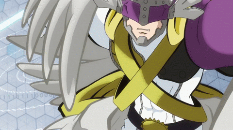
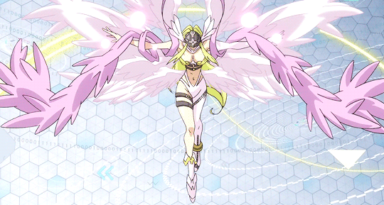

Angemon e Tailmon decidem lutar juntos para derrotar Etemon, então conseguem evoluir para o nível perfeito, HolyAngemon e Angewomon e derrotam Etemon. Vocês partem então para a praia onde Algomon foi visto pela última vez. Na praia o forte está sendo vigiado por BlackWarGreymon, um Digimon do nível Mega. É a batalha mais difícil até então. O que fazer?
